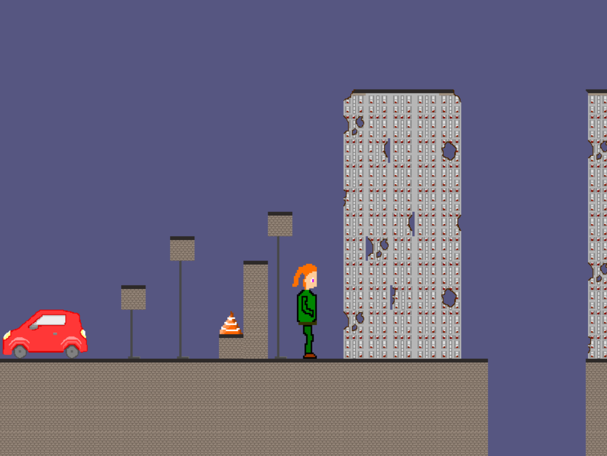
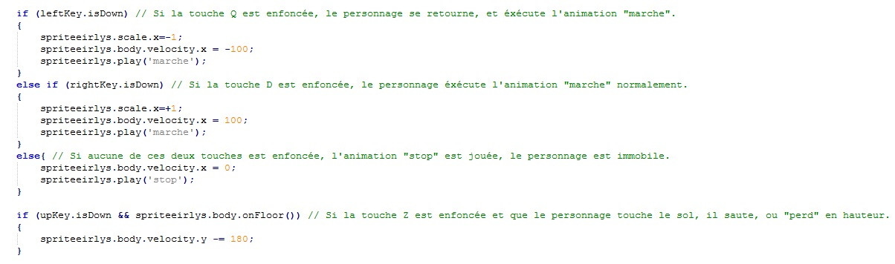
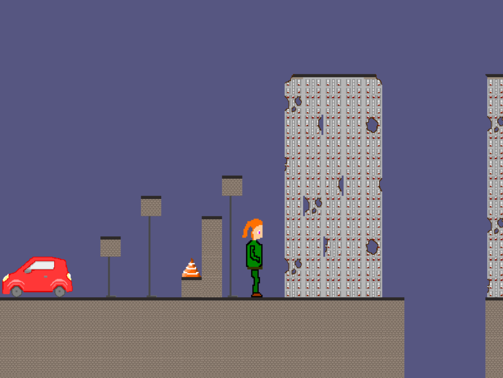
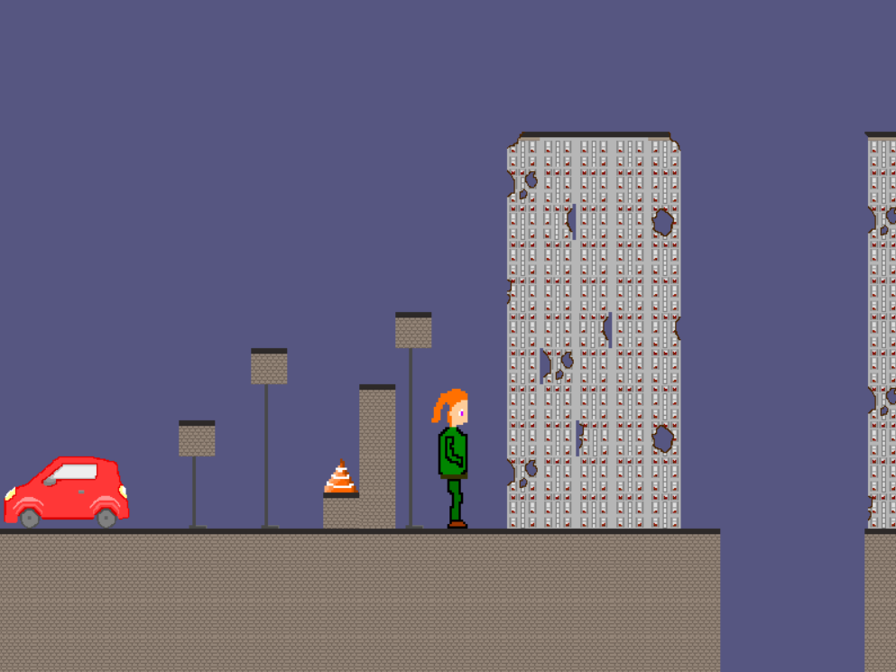
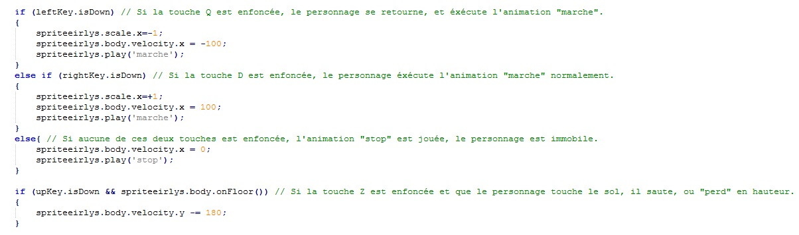
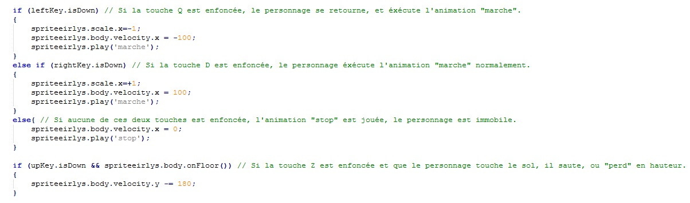

Dans le cadre de mon option d'ISN de terminale, j'ai été amené a mené à bien un projet de programmation pour le bac. Ce projet était un travail de binome, ce qui m'a apporté une première experience de gestion de projet en équipe et en autonomie. Ce projet à pris la forme d'un jeu vidéo, développer en Javaschool. Nous travaillons avec le support Phaser, qui nous a simplifier la gestion de l'aspect mathématique, tel que les vecteurs.

Voici les principales tuiles utilisés ainsi que deux image du jeu fini.
Nous avons réalisé tout l'aspect graphique en dessinant des "tuiles" ainsi que le personnage jouable sur Gimp2 et Paint.Nous avons réliser plusieurs image différente d'un même élement, des "sprites", afin de pouvoir faire des images animées.

Voici des extrait du code utilisé
La programmation du jeu en javaschool consistait à afficher les bonnnes tuiles au bons endroits, tout en respectant certains graphisme et certaines proportions. Il fallait également programmer les contôles et la physique des déplacement.
Phaser est un support qui s'affiche sur une page web. Pour cette raison, nous avons également dû designer une page web avec HTML5 et CSS3.

 

 
